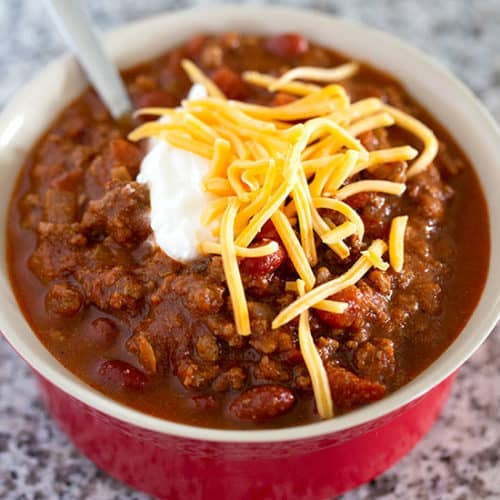

Home Made Chilli
Homemade chili is delicious and goes great with cornbread or over corn chips for a chili pie! I like to use spicy pinto beans.

Ingredients:
- Half kilo of beef
- One big onion
- Can of tomatos
- Can of kidney beans
- Gralic
- Salt
- Black pepper
Steps:
- Cook the beef and the onion.
- Add the remaining ingredients, then bring to a boil.
- Reduce the heat and let simmer for 15 minutes.